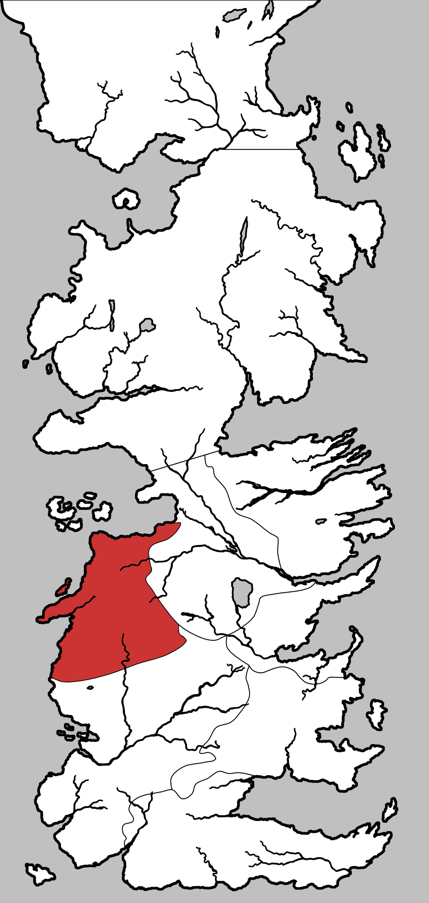

Westerlands
The Westerlands is a region in the west of the continent of Westeros. It is ruled by House Lannister. Before the Targaryen conquest, it was known as the Kingdom of the Rock. The customary surname of bastards born in the Westerlands is Hill.
A large part of the Westerlands consists of hills and mountains. Its lands extend as far west as the the hills of the Westerlands, between the Golden Tooth and Pinkmaiden, south up to the Goldroad, bordering on the Reach, east up to the Sunset Sea, and north up to the Ironman’s Bay.
Map on Next page.

Map on Next page.
